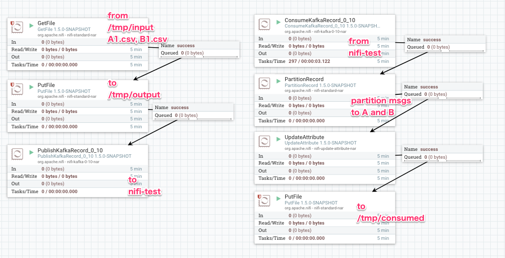
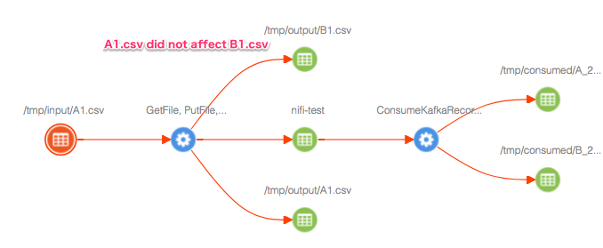
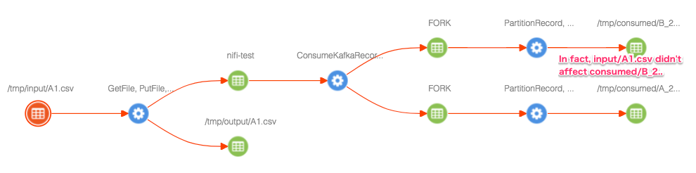

This reporting task stores two types of NiFi flow information, 'NiFi flow structure' and 'NiFi data lineage'.
'NiFi flow structure' tells what components are running within a NiFi flow and how these are connected. It is reported by analyzing current NiFi flow structure, specifically NiFi component relationships.
'NiFi data lineage' tells what part of NiFi flow interacts with different DataSets such as HDFS files or Hive tables ... etc. It is reported by analyzing NiFi provenance events.
Technically each information is sent using different protocol, Atlas REST API v2, and Notification via a Kafka topic as shown in above image.
As both information types use the same NiFi Atlas Types and Cluster Name Resolution concepts, it is recommended to start reading those sections first.
This reporting task creates following NiFi specific types in Atlas Type system when it runs if these type definitions are not found.
Green boxes represent sub-types of DataSet and blue ones are sub-types of Process. Gray lines represent entity ownership. Red lines represent lineage.
Represents a NiFI data flow.
As shown in the above diagram, nifi_flow owns other nifi_component types. This owning relationship is defined by Atlas 'owned' constraint so that when a 'nifi_flow' entity is removed, all owned NiFi component entities are removed in cascading manner.
When this reporting task runs, it analyzes and traverse the entire flow structure, and create NiFi component entities in Atlas. At later runs, it compares the current flow structure with the one stored in Atlas to figure out if any changes has been made since the last time the flow was reported. The reporting task updates NiFi component entities in Atlas if needed.
NiFi components those are removed from a NiFi flow also get deleted from Atlas. However those entities can still be seen in Atlas search results or lineage graphs since Atlas uses 'Soft Delete' by default. See Atlas Delete Handler for further detail.
Part of a NiFi data flow containing one or more processing NiFi components such as Processors and RemoteGroupPorts. The reporting task divides a NiFi flow into multiple flow paths. See Path Separation Logic for details.
Represents a RootGroupPort which can be accessed by RemoteProcessGroup via Site-to-Site protocol.
Represents Unknown DataSets created by CREATE/SEND/RECEIVE NiFi provenance events those do not have particular provenance event analyzer.
A internal DataSet of NiFi flows which connects nifi_flow_paths. Atlas lineage graph requires a DataSet in between Process entities.
An entity in Atlas can be identified by its GUID for any existing objects, or type name and unique attribute can be used if GUID is not known. Qualified name is commonly used as the unique attribute.
Since one Atlas instance can be used to manage multiple environments, i.e clusters, Atlas has to manage objects in different clusters those may have the same name. For example, a Hive table 'request_logs' in a 'cluster-A' and 'cluster-B'. In such case, cluster name embedded in qualified names are crucial.
For these requirements, a qualified name has 'componentId@clusterName' format. E.g. A Hive table qualified name would be dbName.tableName@clusterName (default.request_logs@cluster-A).
From this NiFi reporting task standpoint, a cluster name is need to be resolved at following situations:
To answer such questions, ReportLineageToAtlas reporting task provides a way to define mappings from ip address or hostname to a cluster name. The mapping can be defined by Dynamic Properties with a name in 'hostnamePattern.ClusterName' format, having its value as a set of Regular Expression Patterns to match ip addresses or host names to a particular cluster name.
As an example, following mapping definition would resolve cluster name 'cluster-A' for ip address such as '192.168.30.123' or hostname 'namenode1.a.example.com', and 'cluster-B' for '192.168.40.223' or 'nifi3.b.example.com'.
# Dynamic Property Name for cluster-A
hostnamePattern.cluster-A
# Value can have multiple Regular Expression patterns separated by new line
192\.168\.30\.\d+
[^\.]+\.a\.example\.com
# Dynamic Property Name for cluster-B
hostnamePattern.cluster-B
# Values
192\.168\.40\.\d+
[^\.]+\.b\.example\.com
If any cluster name mapping does not match, then a name defined at 'Atlas Default Cluster Name' is used.
To provide a meaningful lineage granularity in Atlas, this reporting task divide a NiFi flow into paths. The logic has following concepts:
Focuses only on Processors and RootGroupPorts. Input / Output ports in child Process Groups, Process Group hierarchy or Funnels do not contribute path separation.
For example, following two flows are identical in path separation logic:
Root group Input port -> Processor 0 -> Funnel -> Processor 1 -> Input port of a child Process Group -> Processor 2
Root group Input port -> Processor 0 -> Processor 1 -> Processor 2
Both flows will be treated as a single path that consists of Root group Input port, Processor 0, 1 and 2.
Any Processor with multiple incoming relationship from other Processors is treated like a 'Common route' or 'Functional route', and is managed as a separate path.
For example, following flow:
Processor 0 -> Processor 1 -> Processor 2 Processor 3 -> Processor2
Will produce following paths as result:
Processor 0, 1 Processor 2 Processor 3
Self cyclic relationships are ignored.
Based on these concepts, path separation is done by following steps:
To meet different use-cases, this reporting task provides 'NiFi Lineage Strategy' property to control how to report Atlas the DataSet and Process lineage tracked by NiFi flow.
NOTE:It is recommended to try possible options to see which strategy meets your use-case before running the reporting task at a production environment. Different strategies create entities differently, and if multiple strategies are used (or switched from one another), Atlas lineage graph would be noisy. As many entities will be created by this reporting task over time, it might be troublesome to clean entities to change strategy afterward especially Atlas manages data reported by not only NiFi.
In order to test or debug how this reporting task behaves, Atlas Server Emulator may be useful, instead of sending data to a real Atlas.
Maps data I/O provenance events such as SEND/RECEIVE to 'nifi_flow_path' created by NiFi flow structure analysis.
It tracks DataSet lineage at 'nifi_flow_path' process level, instead of event level, to report a simple data lineage graph in Atlas. If different DataSets go through the same 'nifi_flow_path', all of those input DataSets are shown as if it is impacting every output DataSets. For example, if there are A.txt and B.txt processed by the same GetFile processor then eventually ingested to HDFS path-A and path-B respectively by PutHDFS using NiFi Expression Language to decide where to store FlowFiles. Then Atlas lineage graph will show as if both A.txt and B.txt are ingested to HDFS path-A, when you pick path-A to see which DataSets are ingested into it, because both A.txt and B.txt went through the same GetFile and PutHDFS processors.
This strategy generates the least amount of data in Atlas. It might be useful when you prefer a big picture in Atlas that can summarize how each DataSets and Processes are connected among NiFi and other software. NiFi provenance events can be used to investigate more details if needed as it stores event (FlowFile) level complete lineage.
Focuses on DROP provenance event type. Because it represents the end of a particular FlowFile lifecycle. By traversing provenance events backward from a DROP event, the entire lineage can be reported for a given FlowFile including where it is created, then where it goes.
However, reporting complete flow path for every single FlowFile will produce too many entities in Atlas. Also, it may not be the best approach for Atlas as it is designed to manage DataSet level lineage rather than event level as of today. In order to keep the amount of data at minimum, this strategy calculates hash from Input and Output DataSets of a lineage path, so that the same complete path routes will become the same Atlas entity.
If different FlowFiles went through the exact same route, then those provenance data only create a single 'nifi_flow_path' Atlas entity. On the other hand, a single part of NiFi flow can generate different FlowFile lineage paths, those will be reported as different 'nifi_flow_path' entities. Typically when NiFi Expression Language is used for NiFi Processor configuration to connect DataSets.
NOTE:While Simple Path strategy can report lineage by looking at each individual NiFi provenance event record, Complete Path strategy has to query parent events. It needs more computing resource (CPU and I/O) when NiFi provenance event queries are performed.
To illustrate the difference between lineage strategies, let's look at a sample NiFi flow as shown in the screenshots below.
With 'Simple Path', Atlas lineage is reported like below when '/tmp/input/A1.csv' is selected. Since 'Simple Path' simply maps I/O events to a 'nifi_flow_path', '/tmp/output/B1.csv' is shown in the lineage graph because that file is written by the 'GetFile, PutFile...' process.
With 'Complete Path', Atlas lineage is reported like below. This time, 'GetFile, PutFile...' process is not linked to '/tmp/output/B1.csv' because 'Complete Path' strategy created two different 'nifi_flow_path' entities one for '/tmp/input/A1.csv -> /tmp/output/A1.csv' and another for '/tmp/input/B1.csv -> /tmp/output/B1.csv'.
However, once the data records ingested from A.csv and B.csv got into a bigger DataSet, 'nifi-test' Kafka topic in this example (or whatever DataSet such as a database table or a concatenated file ... etc), record level lineage telling where it came from is no longer able to be tracked. So the resulting '/tmp/consumed/B_2..' is shown in the same lineage graph, although file does not contain any data came from '/tmp/input/A1.csv'.
To create lineage describing which NiFi component interacts with what DataSets, DataSet entity and Process entity need to be created in Atlas. Specifically, at least 3 entities are required to draw a lineage graph on Atlas UI. A Process entity, and a DataSet which is referred by a Process 'inputs' attribute, and a DataSet referred from 'outputs' attribute. For example:
# With following entities
guid: 1
typeName: fs_path (extends DataSet)
qualifiedName: /data/A1.csv@BranchOffice1
guid: 2
typeName: nifi_flow_path (extends Process)
name: GetFile, PutHDFS
qualifiedName: 529e6722-9b49-3b66-9c94-00da9863ca2d@BranchOffice1
inputs: refer guid(1)
outputs: refer guid(3)
guid: 3
typeName: hdfs_path (extends DataSet)
qualifiedName: /data/input/A1.csv@Analytics
# Atlas draws lineage graph
/data/A1.csv -> GetFile, PutHDFS -> /data/input/A1.csv
To identify such Process and DataSet Atlas entities, this reporting task uses NiFi Provenance Events. At least, the reporting task needs to derive following information from a NiFi Provenance event record:
'clusterName' in 'qualifiedName' attribute is resolved by mapping ip-address or hostname available at NiFi Provenance event 'transitUri' to a cluster name. See Cluster Name Resolution for detail.
For 'typeName' and 'qualifiedName', different analysis rules are needed for different DataSet. ReportLineageToAtlas provides an extension point called 'NiFiProvenanceEventAnalyzer' to implement such analysis logic for particular DataSets.
When a Provenance event is analyzed, registered NiFiProvenanceEventAnalyzer implementations are searched in following order to find a best matching analyzer implementation:
Currently, following NiFi components are supported by this reporting task:
| Analyzer | covered NiFi components | Atlas DataSet | Description | |||
|---|---|---|---|---|---|---|
| name | eventType | transitUri example | typeName | qualifiedName | ||
| NiFiRemotePort | Remote Input Port | SEND |
|
nifi_input_port | rootGroupPortGUID@clusterName (e.g. 35dbc0ab-015e-1000-144c-a8d71255027d@cl1) | |
With 'Simple Path' strategy intermediate 'nifi_queue' and 'nifi_flow_path' are created as well (marked with + in the following example)
upstream (nifi_flow_path)
-> + queue (nifi_queue)
-> + Remote Input Port
(nifi_flowPath)
-> remote target port
(nifi_input_port)
|
remoteInputPortGUID@clusterName (e.g. f31a6b53-3077-4c59-144c-a8d71255027d@cl1) NOTE: The remoteInputPortGUID is the client side component ID and different from the remote target port GUID. Multiple Remote Input Ports can send to the same target remote input port. |
|||||
| Remote Output Port | RECEIVE |
|
nifi_output_port | rootGroupPortGUID@clusterName (e.g. 45dbc0ab-015e-1000-144c-a8d71255027d@cl1) | ||
With 'Simple Path' strategy intermediate 'nifi_flow_path' and 'nifi_queue' are created as well (marked with + in the following example)
remote target port
(nifi_output_port)
-> + Remote Output Port
(nifi_flow_path)
-> + queue (nifi_queue)
-> downstream
(nifi_flow_path)
|
|
|||||
| NiFiRootGroupPort |
Root group Input Port Root group Output Port |
RECEIVE SEND |
|
nifi_input_port nifi_output_port |
rootGroupPortGUID@clusterName (e.g. 35dbc0ab-015e-1000-144c-a8d71255027d@cl1) |
|
| KafkaTopic |
PublishKafka ConsumeKafka PublishKafka_0_10 ConsumeKafka_0_10 PublishKafkaRecord_0_10 ConsumeKafkaRecord_0_10 |
SEND RECEIVE SEND RECEIVE SEND RECEIVE |
PLAINTEXT://kafka1.example.com:9092/sample-topic (Protocol can be either PLAINTEXT, SSL, SASL_PLAINTEXT or SASL_SSL) |
kafka_topic | topicName@clusterName (e.g. testTopic@cl1) |
NOTE:With Atlas earlier than 0.8.2, the same topic name in different clusters can not be created using the pre-built 'kafka_topic'. See ATLAS-2286. |
| PutHiveStreaming | PutHiveStreaming | SEND | thrift://hive.example.com:9083 | hive_table | tableName@clusterName (e.g. myTable@cl1) |
|
| Hive2JDBC |
PutHiveQL SelectHiveQL |
SEND RECEIVE, FETCH |
jdbc:hive2://hive.example.com:10000/default | hive_table | tableName@clusterName (e.g. myTable@cl1) |
The corresponding Processors parse Hive QL to set 'query.input.tables' and 'query.output.tables' FlowFile attributes. These attribute values are used to create qualified name. |
| HDFSPath |
DeleteHDFS FetchHDFS FetchParquet GetHDFS GetHDFSSequenceFIle PutHDFS PutParquet |
REMOTE_INVOCATION FETCH FETCH RECEIVE RECEIVE SEND SEND |
hdfs://nn.example.com:8020/user/nifi/5262553828219 | hdfs_path | /path/fileName@clusterName (e.g. /app/warehouse/hive/db/default@cl1) |
|
| HBaseTable |
FetchHBaseRow GetHBase PutHBaseCell PutHBaseJSON PutHBaseRecord ScanHBase |
FETCH RECEIVE SEND SEND SEND RECEIVE |
hbase://hmaster.example.com:16000/tableA/rowX | hbase_table | tableName@clusterName (e.g. myTable@cl1) |
|
| FilePath |
PutFile GetFile ... etc |
SEND RECEIVE ... etc |
file:///tmp/a.txt | fs_path | /path/fileName@hostname (e.g. /tmp/dir/filename.txt@host.example.com) |
|
| unknown.Create Receive, Fetch Send, RemoteInvocation |
Other Processors those generates listed event types |
CREATE RECEIVE FETCH SEND REMOTE_INVOCATION |
nifi_data | processorGuid@clusterName db8bb12c-5cd3-3011-c971-579f460ebedf@cl1 |
||
This reporting task requires Atlas REST API version 2, which is introduced at Atlas 0.8-incubating. Older versions of Atlas are not supported.
In order to report lineage to Atlas, this reporting task must know what a given processor does with a certain DataSet. Then create an 'Atlas Object Id' for a DataSet which uniquely identifies an entity in Atlas. Atlas Object Id has unique properties map, and mostly 'qualifiedName' is set in the unique properties map to identify an entity. The format of a qualifiedName depends on each DataSet.
To create this Atlas Object ID, we have to implement Processor-specific code that analyzes configured properties. See Supported DataSets and Processors for details.
As underlying Atlas client library caches configurations when it runs the first time, some properties of this reporting task can not be updated by stopping, configure and restarting the reporting task.
NiFi process needs to be restarted in such case.
Atlas uses 'SoftDeleteHandler' by default which mark relationships deleted, but still can be seen in Atlas UI. Soft delete model is useful if you would like to capture every lineage ever defined, but if you prefer seeing current state of a NiFi flow, Hard delete would be more appropriate.
To change this behavior, set following in 'atlas-application.properties' on Atlas server, then restart Atlas. HardDeleteHandlerV1 physically removes lineage:
atlas.DeleteHandlerV1.impl=org.apache.atlas.repository.store.graph.v1.HardDeleteHandlerV1
If you have Apache NiFi project source code on your local machine, you can run Atlas Server Emulator which is included in 'nifi-atlas-reporting-task' test module. The emulator listens on 21000 port for Atlas REST API v2, and 9092 port for Kafka by default. A running NiFi instance can use the emulator to report information from this reporting task. It can be helpful when you need to debug how the reporting task works, or try out different reporting strategies.
See Apache Atlas Server Emulator readme file for further details.